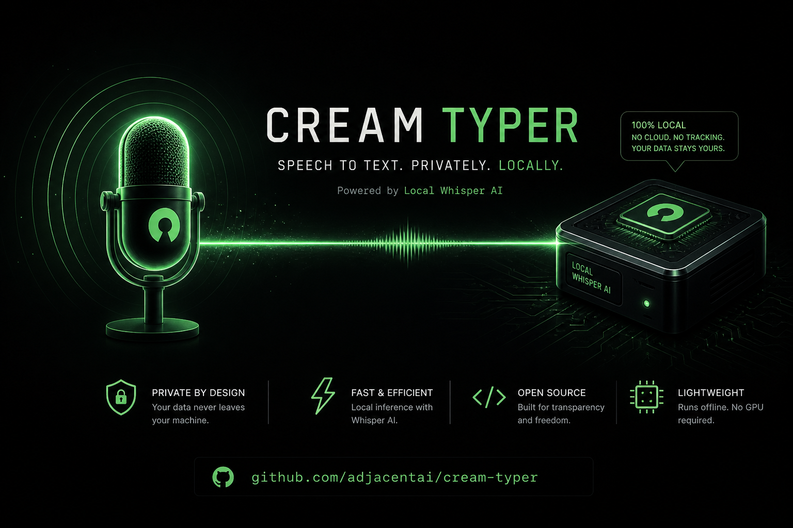

Cream Typer: Local Whisper Voice Dictation for macOS (Open Source)

8 hours of writing prompts and code a day. Wrists screaming. Every voice dictation tool we tried either shipped audio to a US cloud, came as a 200 MB Electron monster, or made you hold a key like a walkie-talkie. So we built our own — and open-sourced it today.
Cream Typer is a tiny voice dictation tool for macOS. Tap Caps Lock, speak in any language, get text in any other language pasted at your cursor — in Slack, Notes, VS Code, your browser, anywhere. Runs entirely on your machine. No cloud, no API keys, no telemetry.
MIT-licensed. ~300 lines of Python. Sub-second latency on Apple Silicon.
- Tap Caps Lock, speak any language, get text pasted at your cursor in any app on macOS.
- 100% local — whisper.cpp on Metal GPU. Zero cloud, zero telemetry, zero API keys.
- 18 languages with on-the-fly translation (single config swap, not an extra model).
- Transcription latency: 0.3–0.5 seconds for 10 seconds of speech on Apple Silicon.
- ~300 lines of Python, MIT-licensed. Windows & Linux backends stubbed — PRs welcome.
Repo: github.com/adjacentai/cream-typer
Star it, fork it, send a PR — we're calling for contributors on Windows and Linux backends.
Why we built it
We write code 8 hours a day at NeCL. Wrists were dying. We tried every popular voice dictation tool on the market. Each had at least one dealbreaker:
- Cloud-only tools shipped our audio to a US server. Our keystrokes are not training data.
- Electron-based apps ate 200 MB of RAM and half a percent of battery just to sit in the menu bar.
- Hold-to-talk hotkeys require you to physically press a key for the entire duration of speech. Try doing that for a 3-minute design discussion.
We wanted four things:
- Local — no audio leaves the Mac, ever
- Fast — sub-second transcription
- Toggle — tap to start, tap to stop, hands free
- Polyglot — speak any language, get any other
Nothing on the market did all four. So we built it ourselves.
How it works
Caps Lock (tap) → recording starts
Caps Lock (tap) → whisper.cpp on Metal GPU → clipboard → Cmd+VTap Caps Lock. Speak. Tap again. Text appears wherever the cursor is. Doesn't matter what app you're in — Slack, VS Code, Notes, browser, terminal. The previous clipboard contents are saved before paste and restored 150ms later, so nothing in your workflow breaks.
The translation magic — and why it should not exist
This is the part we did not expect.
Whisper has a built-in task=translate flag that's supposed to translate audio to English. It doesn't work properly on large-v3-turbo — that model was fine-tuned without translation data, and the flag returns garbled output. The fastest, most useful Whisper variant has translation broken on arrival.
We sidestepped it. The fix turns out to be a single config swap, not an extra model.
The insight
Whisper's encoder produces a language-agnostic representation of audio. It encodes meaning, not words. The decoder then writes that meaning down in whichever language you specify via the language parameter.
So if you speak English with language="ru" set — the decoder outputs Russian. Same audio in. Different writing out. Technically not "translation" in the architectural sense — practically identical to what users want.
# That's the entire "translation feature"
def transcribe(audio: bytes, target_lang: str) -> str:
return whisper_client.post(
audio=audio,
language=target_lang, # ← swap this, get a different output language
)One line of config instead of bundling a translation model. A whole feature for free.
What this unlocks
Cream Typer ships with 18 modes in the menu bar. Click to switch. Whatever you say, you get text in the active mode's language:
| You speak (any language) | Active mode | What gets pasted |
|---|---|---|
| 🇷🇺 «Привет, как у тебя дела?» | 🇬🇧 English | Hello, how are you doing? |
| 🇬🇧 "Let's ship it on Friday" | 🇷🇺 Русский | Давай выкатим в пятницу |
| 🇩🇪 "Können wir morgen reden?" | 🇯🇵 日本語 | 明日話せますか？ |
| 🇰🇷 "안녕하세요" | 🇸🇦 العربية | مرحبًا |
| anything | 🌐 → English | always English |
For multilingual teams this matters. You can think and speak in your native language and have the text land in whatever language the channel needs — without switching keyboard layouts, without touching a translator, without leaving the document you're working in.
The strongest argument for the translation feature isn't "it saves time." It's "you compose better in your native language, and the chat doesn't have to know."
Why running it locally matters more than you think
"Local AI" gets thrown around like a buzzword. For Cream Typer it's not a marketing line — it's the only architecture that works for what we're doing. Three reasons:
1. Privacy that's actually verifiable
When you dictate via cloud STT, your voice is sent to a third party. That third party processes it on their servers. Their privacy policy says they don't train on it (usually). You have no way to verify that claim.
With Cream Typer, the audio file lives in RAM on your Mac for ~400 milliseconds, gets passed to a local whisper.cpp process running on your own hardware, and is discarded. Zero network egress. Zero. You can verify it with Little Snitch, with tcpdump, with lsof -i — the audio never leaves the machine because there's no code path that would send it anywhere.
This matters for anyone dictating: medical notes, legal drafts, internal company chat, financial commentary, anything covered by NDA, anything you'd be uncomfortable seeing in a leaked dataset.
2. Cost that scales to zero
Cloud STT pricing models all converge on the same thing: you pay per minute of audio, forever. Even at $0.006 per minute (current OpenAI Whisper API), heavy daily users hit $30-60/month. That's a Spotify subscription burning every month for typing.
Cream Typer downloads the model once (~550 MB), then runs forever for $0. The marginal cost of every word you dictate after install is electricity — and Apple Silicon's Neural Engine sips it. Talking for an hour into Cream Typer costs about as much as having your laptop screen on for an hour.
3. Speed that beats round-trips
Cloud round-trips take 200-800ms before the model even starts thinking. On a slow Wi-Fi or in a coffee shop, that becomes 1-2 seconds of staring at your screen waiting for text. Local inference on Metal GPU starts immediately and finishes in 0.3-0.5 seconds for 10 seconds of speech. By the time you'd see "Loading…" on a cloud tool, your text is already pasted.
4. It works offline
Plane. Train. Cabin. Hotel Wi-Fi that just died. Cloud dictation tools become bricks in those moments. Cream Typer keeps working because it doesn't need anything except your own hardware.
The 18 languages, and how to add more
Cream Typer ships with 18 language modes including the flagship "→ English from any" shortcut:
🌐 → English (from any)
🇬🇧 English 🇺🇦 Українська 🇪🇸 Español
🇩🇪 Deutsch 🇫🇷 Français 🇮🇹 Italiano
🇵🇹 Português 🇳🇱 Nederlands 🇵🇱 Polski
🇯🇵 日本語 🇨🇳 中文 🇰🇷 한국어
🇹🇷 Türkçe 🇹🇭 ไทย 🇻🇳 Tiếng Việt
🇸🇦 العربية 🇷🇺 РусскийWhisper itself supports 99 languages. Adding any of them is three lines in src/config.py:
MODES = {
...
"fi": {"language": "fi"}, # ← Finnish
}
MODE_LABELS = {
...
"fi": "🇫🇮 Suomi",
}
MENU_MODES = [..., "fi"]That's the entire change. No UI code, no string files, no rebuild — restart the app, the new language is in the menu.
Architecture & code quality
The whole codebase reads in 10-15 minutes. We deliberately kept it under 300 lines because every additional line of platform-glue code is a line that breaks on macOS updates.
src/
├── app.py # business logic — NO platform-specific code
├── config.py # constants, modes, hotkey codes
├── recorder.py # sounddevice → WAV in memory (io.BytesIO)
├── transcriber.py # HTTP client for whisper.cpp server
└── backend/
├── _base.py # Protocol contracts for contributors
├── _macos.py # Quartz CGEventTap + Cmd+V + rumps ✅
├── _windows.py # pynput + pystray 🚧 stub
└── _linux.py # pynput + pystray (X11) 🚧 stubPlatform-specific code is isolated in backend/. The contracts are defined as Python Protocols in _base.py. To add Windows or Linux support, you implement three functions: hotkey listener, paste action, tray icon — about 150 lines per platform. The rest of the code is unchanged.
What works today, what's coming
| ✅ Shipped | 🚧 Coming |
|---|---|
| macOS Apple Silicon (Metal GPU) | Windows backend (pynput + pystray) |
| macOS Intel (CPU fallback) | Linux backend (X11 first, Wayland later) |
| 18 language modes + auto-translate | Streaming transcription |
| Toggle hotkey on Caps Lock | Custom hotkeys |
| Clipboard preservation | Voice Activity Detection |
Install in 5 minutes
git clone https://github.com/adjacentai/cream-typer
cd cream-typer
make setup # creates venv, builds whisper.cpp, downloads the model
make whisper # terminal 1: keep the server running
make run # terminal 2: start the menu-bar appFrom git clone to first dictation: about 5 minutes — most of which is downloading the 550 MB Whisper model.
You'll need to grant three macOS permissions on first run (Input Monitoring, Microphone, Accessibility). The app prompts for them automatically; full instructions are in the README.
We're calling for contributors
This is open source not as a marketing tactic. We genuinely use Cream Typer every day, and the only way it gets meaningfully better is if more people poke at it.
Where help would land hardest:
- Windows backend — the contracts are defined, the stub is waiting.
pynput+pystrayshould do most of the work. - Linux backend — same architecture, X11 first, Wayland support later.
- Streaming transcription — instead of waiting for the full audio clip, transcribe chunks as you speak. Whisper.cpp supports it.
- Voice Activity Detection — smarter than the current 0.3s minimum-recording threshold.
- More languages — Whisper supports 99, we shipped 18. PR the rest.
- Custom hotkeys — Caps Lock works for us; some people want Right Cmd or fn.
Open an issue, send a PR, or just star the repo to follow along.
Why we open-sourced this
Cream Typer is the kind of tool we use ourselves every day. The codebase reads in 10 minutes. It uses production-grade engineering — local Whisper, low-latency pipelines, CGEvent magic, clean platform abstractions — but applied to a personal pain point instead of a paying customer's problem.
The same engineering goes into our client work at NeCL: production RAG over enterprise documents, real-time voice agents for B2B call centers, on-prem AI for sensitive data. Open-sourcing tools like this is how we share what we know without giving away client work — and it lets us prove what we can build in code, not in case-study slides.
If it helps you, great. If you build something better on top of it, even better. If you need this kind of engineering for your own product — we're here.
Frequently Asked Questions
How is Cream Typer different from cloud voice dictation tools?
Cream Typer runs whisper.cpp locally on your Mac's Metal GPU. Audio never leaves the machine — zero network egress, zero telemetry, no API keys. Cloud tools send your voice to a third-party server you have no way to verify.
What languages does Cream Typer support?
18 language modes ship by default — English, Russian, Ukrainian, Spanish, German, French, Italian, Portuguese, Dutch, Polish, Japanese, Chinese, Korean, Turkish, Thai, Vietnamese, Arabic, plus a "→ English from any" shortcut. Whisper itself supports 99 languages; adding any is three lines in src/config.py.
Does Cream Typer work offline?
Yes. After the initial ~550 MB Whisper model download, Cream Typer needs nothing from the network. Works on planes, trains, in cabins, and on dead hotel Wi-Fi.
What is the transcription latency on Apple Silicon?
0.3–0.5 seconds for 10 seconds of speech, running on Metal GPU. By the time a cloud tool would show "Loading…", your text is already pasted.
Does Cream Typer work on Windows or Linux?
macOS Apple Silicon and Intel are shipped today. Windows and Linux backends are stubbed with defined contracts — about 150 lines per platform to implement hotkey listener, paste action, and tray icon. PRs welcome.
How does the translation feature work?
Whisper's encoder produces a language-agnostic representation of audio. The decoder writes it down in whichever language you pass via the language parameter. So speaking English with language="ru" produces Russian text. One config swap, no extra translation model.
What does it cost to run Cream Typer?
Zero marginal cost after install. The model downloads once, then runs on your hardware forever. Cloud STT typically costs $30–60/month for heavy daily users at $0.006/minute.
See also:
- Cream Mic: AI Desktop Assistant That Listens, Sees, and Answers in Real Time
- Stop using GPT-4 for everything
- What Is NeCL? AI Engineering for SaaS — Systems, Not Wrappers
Need production AI engineering?
We build local-first AI: RAG over enterprise documents, real-time voice agents, on-prem deployment. Same engineering you see in Cream Typer, applied to your business.
Star Cream Typeror talk to us on Telegram